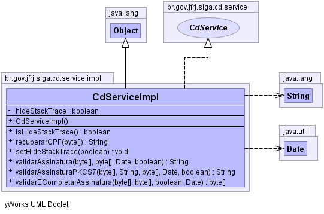

br.gov.jfrj.siga.cd.service.impl
Class CdServiceImpl
java.lang.Object
 br.gov.jfrj.siga.cd.service.impl.CdServiceImpl
br.gov.jfrj.siga.cd.service.impl.CdServiceImpl
- All Implemented Interfaces:
- CdService, Remote
public class CdServiceImpl
- extends java.lang.Object
- implements CdService
Está classe implementa os métodos de validação e conversão de assinaturas
digitais. O acesso à esta classe é realizado via web-services, com interfaces
definidas no módulo siga-ws, conforme o padrão adotados para o SIGA.
-
-

|
Method Summary |
boolean |
isHideStackTrace()
|
java.lang.String |
recuperarCPF(byte[] cms)
|
void |
setHideStackTrace(boolean hideStackTrace)
|
java.lang.String |
validarAssinatura(byte[] assinatura,
byte[] documento,
java.util.Date dtAssinatura,
boolean verificarLCRs)
|
java.lang.String |
validarAssinaturaPKCS7(byte[] digest,
java.lang.String digestAlgorithm,
byte[] assinatura,
java.util.Date dtAssinatura,
boolean verificarLCRs)
|
byte[] |
validarECompletarAssinatura(byte[] assinatura,
byte[] documento,
boolean politica,
java.util.Date dtAssinatura)
Verifica a assinatura digital, a partir do hash SHA1 do documento e do
arquivo PKCS7. |
| Methods inherited from class java.lang.Object |
clone, equals, finalize, getClass, hashCode, notify, notifyAll, toString, wait, wait, wait |
hideStackTrace
private boolean hideStackTrace
CdServiceImpl
public CdServiceImpl()
isHideStackTrace
public boolean isHideStackTrace()
setHideStackTrace
public void setHideStackTrace(boolean hideStackTrace)
validarAssinatura
public java.lang.String validarAssinatura(byte[] assinatura,
byte[] documento,
java.util.Date dtAssinatura,
boolean verificarLCRs)
- Specified by:
validarAssinatura in interface CdService
validarAssinaturaPKCS7
public java.lang.String validarAssinaturaPKCS7(byte[] digest,
java.lang.String digestAlgorithm,
byte[] assinatura,
java.util.Date dtAssinatura,
boolean verificarLCRs)
- Specified by:
validarAssinaturaPKCS7 in interface CdService
recuperarCPF
public java.lang.String recuperarCPF(byte[] cms)
- Specified by:
recuperarCPF in interface CdService
validarECompletarAssinatura
public byte[] validarECompletarAssinatura(byte[] assinatura,
byte[] documento,
boolean politica,
java.util.Date dtAssinatura)
throws java.lang.Exception
- Description copied from interface:
CdService
- Verifica a assinatura digital, a partir do hash SHA1 do documento e do
arquivo PKCS7.
- Specified by:
validarECompletarAssinatura in interface CdService
- Parameters:
assinatura - PKCS7 encoded contendo a assinatura e o certificado do
assinante
- Returns:
- Retorna Common Name (CN) do assinate se tudo ocorrer
corretamente. Caso haja algum erro, retorna "ERRO: ", seguido da
mensagem de erro.
- Throws:
java.lang.Exception